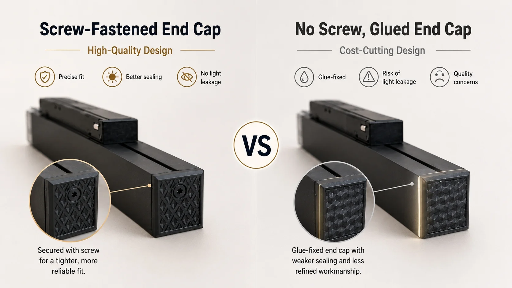

10 Things Experienced Buyers Check Before Placing a Magnetic Track Lighting Order

Three magnetic track lights from three different suppliers arrive in your office. They look nearly identical in photos. The specifications printed on the boxes are almost the same. The prices, however, are significantly different.
Which one do you order? Which supplier do you trust with your next project?
If you have ever faced this situation, you already know the challenge: magnetic track lights that look the same on paper can perform very differently after installation. The difference is not in the marketing specifications. It is in the engineering details that most suppliers never show you — and most buyers never think to check.
After evaluating dozens of magnetic track lighting systems from factories across China, we have developed a structured approach to comparing samples. This guide walks through the 10 things experienced buyers physically check before making a procurement decision — in the order you would naturally inspect them.
A Real Buyer's Experience
A lighting distributor in Dubai received samples from three Chinese suppliers for a hotel project. All three quoted similar specifications — 48V systems, CRI > 80, aluminum housing. The cheapest was $8.50 per module, the most expensive was $14.20.
He initially planned to go with the mid-range option at $11.00, assuming "they are all similar anyway." Instead, he spent an afternoon examining the samples side by side with his technical team.
What they found: The cheapest sample used clip-only assembly with visible gaps. The mid-range sample had good housing but a single-row LED layout and no reflector film inside the floodlight module. The most expensive sample had screw-fixed housing, double-row LEDs, a full reflector cavity, gold-plated contact pins, and a branded driver with overload protection.
The decision became obvious once they looked past the specifications. The distributor ordered from the $14.20 supplier. Two years later, that hotel project has had zero maintenance calls.
Part of Tracklinear's Knowledge Hub: How to Identify High-Quality Magnetic Track Lighting →
1. When You Pick It Up: Does the Housing Feel Solid?
The question this answers: "Is the lamp body built to last, or will it loosen over time?"
The first thing experienced buyers do is simply pick up the light and hold it. The weight, the fit of the seams, the resistance when you try to twist the housing — these tactile signals reveal more about build quality than any datasheet.
What to check
- Assembly method: Is the housing fixed with side screws, or held together by clips? Screw-fixed housings maintain tight tolerances over years of thermal expansion and contraction. Clip-only housings develop visible gaps within months.
- End cap fit: Does the end cap seat flush against the housing, or is there a micro-gap? Push gently on the end cap — does it move?
- Overall rigidity: Hold the light at both ends and try to twist it. A well-built housing should have minimal torsional flex.
Buyer evaluation method
- Visual inspection: Look at the seam between housing and end cap. Can you see light through it before powering on?
- Touch test: Run your finger along all edges. Rough seams indicate poor tooling quality.
- Ask the supplier: "Is this assembled with screws or clips? Can you show me a photo of the internal assembly before the diffuser is installed?"
⚠ Business impact
Clip-assembled lights may save $0.30–$0.50 per unit in manufacturing cost. But the resulting light leakage and structural looseness lead to customer complaints, site revisits, and replacement costs that far exceed the initial savings.

2. When You Power It On: Is There Any Light Leakage?
The question this answers: "Will this light look premium on the ceiling, or will it create distracting light spots?"
Light leakage is not just a cosmetic issue. In hotel corridors, retail displays, and residential interiors, any light escaping from unintended areas immediately makes the installation look low-end. Experienced buyers always power on samples in a dim room before deciding.
What to check
- Side gaps: Is light escaping from the seam between the housing and diffuser?
- End caps: Are both ends completely dark when the light is on?
- Joint connections: If the system has multiple connected modules, are there bright spots at the connection points?
Buyer evaluation method
- Dark room test: Power the light in a low-light environment. Look at it from multiple angles — any light escaping from non-optical surfaces indicates low assembly precision.
- Tape test: If you can see light leakage, place a piece of tape over the gap temporarily. Does the brightness change? This tells you how much light is being lost through structural gaps rather than the intended optical opening.

3. When You Remove the Diffuser: What Is the LED Layout?
The question this answers: "Will the light distribution be uniform, or will there be hot spots and dark zones?"
Removing the diffuser reveals one of the most telling indicators of quality: the LED layout and PCB design. This is not something you can see in a product photo, but it directly determines light uniformity and thermal behavior.
Single-row vs double-row LED
- Single-row: Lower cost, simpler structure, suitable for basic applications. But if the power is pushed too high, the LEDs are concentrated in a narrow strip, creating a hot zone in the center and dimmer edges.
- Double-row: More uniform light distribution, higher brightness density, reduced visible spotting. Preferred for commercial applications where consistent illumination matters.
Buyer evaluation method
- Count the rows: Single or double row? For flood/linear modules above 10W, double-row is generally a sign of better design consideration.
- Check the PCB: Is the LED board aluminum-core (aluminum PCB) or standard FR4? Aluminum PCB conducts heat away from the LEDs significantly better.
- LED spacing: Are LEDs evenly spaced, or are there large gaps that will create visible dark zones in the beam?
⚠ Business impact
A single-row module pushed to high wattage without proper thermal design will lose 20-30% of its initial brightness within the first year. For commercial projects with long operating hours, this means premature replacement and dissatisfied end clients.

4. While the Diffuser Is Off: Check the Optical Design
The question this answers: "Is the light output efficient, or is the optical path losing light that should be reaching the target surface?"
Inside every magnetic track light, the optical system determines how efficiently light reaches the illuminated surface. This is one of the most overlooked quality indicators because it is invisible when the light is fully assembled.
What to look for by product type
- Flood / linear modules: Is there a reflective film or reflective cavity behind the LEDs? Good designs use reflective materials to direct light toward the diffuser, improving efficiency and reducing light trapped inside the housing.
- Grille / anti-glare modules: What is the louver depth? Deeper grilles provide better glare control but reduce efficiency. A well-designed grille balances both.
- Spotlight modules: Is the lens clean and free of bubbles or yellowing? Does the reflector have a smooth, consistent surface?
Buyer evaluation method
- Diffuser material check: PC (polycarbonate) is more impact-resistant but may yellow over time. PMMA (acrylic) offers better clarity but is more brittle. Ask which material is used.
- Reflector test: Shine a flashlight into the module housing (with LEDs off). Can you see reflective surfaces, or is it bare aluminum?
5. After 30 Minutes: How Hot Does It Get?
The question this answers: "Will this light maintain its brightness over time, or will it degrade prematurely?"
Heat is the single biggest enemy of LED lifespan. Every 10°C above the recommended junction temperature can cut LED life by half. Yet many magnetic track lights are designed with aluminum housings that look substantial but lack proper thermal pathways from the LED to the ambient air.
What to check
- Housing temperature after continuous operation: Run the light at full power for 30 minutes, then feel the housing. If it is uncomfortably hot to hold (above 60°C surface temperature), the thermal design is inadequate.
- Aluminum thickness and weight: Heavier housings generally indicate thicker aluminum walls and better heat-sinking capacity. Compare the weight of similar-sized modules from different suppliers.
- Extruded vs die-cast: Extruded aluminum (typical for linear modules and tracks) provides consistent thermal performance along the entire length. Die-cast aluminum (typical for spotlights and complex shapes) can be excellent but depends on wall thickness and alloy quality.
Buyer evaluation method
- Temperature feel test: Run the light for 30 min. Touch the housing. If it's too hot to hold continuously, the thermal design needs improvement.
- Weight comparison: Weigh modules of similar size from different suppliers. A 20% weight difference in the same size class often indicates thinner aluminum walls.
- Ask the supplier: "Do you have temperature rise test data? What is the housing surface temperature after 4 hours of continuous operation at 25°C ambient?"
⚠ Business impact
Inadequate thermal management causes 60% of LED failures in track lighting systems. A light that runs 15°C hotter than a well-designed alternative will have roughly half the useful life — meaning replacement costs, labor, and downtime that far exceed the initial price difference.
6. When You Mount It on the Track: How Secure Is the Magnetic Hold?
The question this answers: "Will the light stay securely in place during installation and long-term use?"
Magnetic fixation is the defining feature of magnetic track lighting — but not all magnetic systems are equally reliable. The holding force depends on magnet grade, contact surface area, and the mechanical interface between magnet and track.
What to check
- Magnet count and position: How many magnets are in each module? Are they evenly distributed along the length?
- Contact surface area: Larger magnetic contact surfaces distribute the holding force more evenly and reduce the risk of sagging in longer modules.
- Safety lock / mechanical clip: Does the module have a secondary mechanical lock in addition to the magnetic hold? This is essential for vertical wall installations and ceiling installations in earthquake-prone regions.
Buyer evaluation method
- Installation feel test: Mount and remove the module from the track multiple times. Does it click into place cleanly? Does the magnetic hold feel strong and consistent?
- Shake test: Once mounted, try to wiggle the module. Any movement at the track-module interface indicates weak or uneven magnetic contact.
- Ask the supplier: "What magnet grade do you use? Is there a safety lock for vertical installation? Have you tested the holding force after repeated mounting cycles?"
7. The Most Overlooked Failure Point: Electrical Contact Quality
The question this answers: "Will this light flicker or lose power months after installation?"
The electrical connection between the track and the module is the most common failure point in magnetic track lighting systems — and the most commonly neglected in factory quality control. A weak or poorly designed contact leads to flickering, intermittent power loss, and heat buildup at the connection point.
What to check
- Contact pin material: Are the conductive pins copper, brass, or copper alloy? Is there a surface treatment (nickel or gold plating) to prevent oxidation?
- Spring pressure: Do the contact pins have spring-loaded mechanisms to maintain consistent pressure against the track's copper strip? This determines long-term contact reliability.
- Contact surface area: Larger contact surfaces provide more stable electrical connections and lower resistance. Compare the contact pin size between samples.
Buyer evaluation method
- Visual inspection: Look at the contact pins. Are they visibly worn, or do they have a clean, uniform surface?
- Mounting test: Install and remove the module 10-20 times. Does the electrical connection remain consistent? Do the pins show signs of deformation?
- Ask the supplier: "What material are the contact pins? Are they gold-plated or nickel-plated? Have you tested contact reliability after 1,000 installation cycles?"
⚠ Business impact
Poor electrical contact is the #1 cause of after-installation service calls in magnetic track lighting systems. Each site revisit costs $100–$300 in labor — often more than the price of the lighting module itself. Investing in high-quality contact design eliminates this entire cost category.

8. Before Connecting to Power: What Driver Does the System Use?
The question this answers: "Will the system run reliably, or will the power supply fail within the first year?"
The power supply (driver) is the component most likely to fail in any LED lighting system — and magnetic track lighting is no exception. Yet many buyers focus entirely on the track and modules, treating the driver as an afterthought.
What to check
- Driver brand and certification: Is the driver from a known brand (Mean Well, Inventronics, Tridonic, or equivalent)? Does it carry CE, EMC, or UL certification?
- Protection features: Does the driver include overload protection, short-circuit protection, and over-temperature protection?
- Power headroom: Is the power supply rated with at least 20-30% headroom above the total connected load? Running a driver at maximum capacity continuously accelerates failure.
- Dimming compatibility: If the project requires dimming, is the driver compatible with the specified control protocol (TRIAC, 0-10V, DALI, or smart system)?
Buyer evaluation method
- Read the label: Check the driver's output rating. Is it a constant-voltage 48V driver? What is the maximum rated current?
- Flicker test: Record the light output with your phone camera. If you see visible banding or flicker in the recording, the driver output quality is poor.
- Ask the supplier: "What brand driver do you use? Is it CE/EMC certified? What protection features does it include? What is your recommended power headroom?"
⚠ Business impact
A driver failure typically requires replacing the entire power supply unit — plus the labor cost of accessing it (which may require ceiling work in installed projects). A $15 difference in driver quality can prevent a $200+ service call. Professional buyers calculate this before ordering.
9. When You Measure the Light: Is the Color Quality Consistent?
The question this answers: "Will the lighting look professional and uniform across multiple fixtures?"
Two magnetic track lights may have the same CRI rating but produce visibly different light quality. The difference lies in color consistency — both within a single fixture and across multiple fixtures from the same production batch.
What to check
- CRI (Color Rendering Index): Ra ≥ 90 is the baseline for commercial and hospitality projects. Ra ≥ 95 is required for retail, galleries, and high-end residential.
- SDCM / color consistency: SDCM ≤ 3 means the color variation between fixtures is virtually imperceptible. SDCM ≤ 5 allows visible differences between adjacent lights.
- Batch consistency: If you have multiple samples at the same CCT, are they all visually identical when lit side by side?
Buyer evaluation method
- Side-by-side comparison: Power on multiple samples at the same CCT (e.g., 3000K). Are they visually identical? Any greenish or bluish tint indicates poor binning control.
- White paper test: Shine the light on a white surface. Does the color appear clean and neutral?
- Ask the supplier: "What is the actual CRI (not just claimed)? Can you guarantee SDCM ≤ 3? Are LEDs from the same bin for the entire order?"
⚠ Business impact
Visible color variation between fixtures is one of the most common complaints in hospitality and retail projects. Replacing a single mismatched fixture is rarely possible (LED bins change over time), often requiring full system replacement to achieve visual uniformity.
10. What Experienced Buyers Check That Most Beginners Miss
The question this answers: "Will the system meet project specifications and pass inspection?"
Beyond the physical product, professional buyers verify three more things that separate competent suppliers from the rest.
Anti-glare design (UGR)
For office, hospitality, and education projects, anti-glare performance is a regulatory and comfort requirement. Check whether grille modules have adequate louver depth, whether spotlight modules use black cavity designs to reduce glare, and whether the supplier provides UGR test data (UGR < 19 is the commercial standard).
Dimming and control compatibility
Not all magnetic track lights that claim "dimmable" actually dim smoothly. Confirm which control protocol is supported: TRIAC (leading/trailing edge), 0-10V, DALI, or smart systems (Tuya, Zigbee). Some suppliers offer "three-color switching" (3000K/4000K/6000K) and call it dimming — this is not the same as true dimming.
Certifications
Certifications (CE, RoHS, EMC, UL, etc.) are not optional checkboxes. They are the tangible proof that the product has been tested to meet specific safety and performance standards. Request certificate copies and verify that the certificate model numbers match the actual product.
Buyer evaluation method
- Anti-glare: Shine the light at eye level. Is the direct glare uncomfortable? Check if the module has a deep recessed cavity.
- Dimming test: If possible, test the dimming range from 1% to 100%. Any audible buzzing or visible flicker at any point in the range is a red flag.
- Certificate check: Request PDF copies of all certifications. Cross-check model numbers. If the supplier hesitates to share certificates, that is a significant warning sign.
Supplier Comparison: What Professional Suppliers Offer vs What Cheap Suppliers Hide
When you apply these 10 checks to samples from different suppliers, the differences become clear. Here is what typically separates a quality-oriented supplier from a price-focused one:
| Check Point | Quality Supplier | Price-Focused Supplier |
|---|---|---|
| Housing assembly | Screw-fixed, tight seams, no flex | Clip-only, visible gaps, torsional flex |
| Light leakage | Completely sealed when lit | Light escapes from sides and end caps |
| LED layout | Double-row (linear modules), aluminum PCB | Single-row, standard FR4 PCB |
| Optical design | Reflective cavity + quality diffuser | Bare housing, thin diffuser |
| Heat dissipation | ≥2.0mm aluminum, temperature test data available | Thin aluminum, no thermal testing |
| Magnetic hold | Multiple magnets + mechanical safety lock | Single magnet, no secondary lock |
| Contact pins | Gold-plated copper, spring-loaded | Unplated brass, fixed contacts |
| Power supply | Branded driver, certified, 20-30% headroom | Generic driver, no certification, tight margins |
| CRI / color | Ra ≥ 90, SDCM ≤ 3, same bin throughout | Ra ≥ 80 claimed (actual lower), SDCM ≤ 5+ |
| Certifications | CE, RoHS, EMC — model-matched certificates | Generic or expired certificates |
Practical Checklist: What to Do When You Receive Samples
Sample Evaluation Checklist
- Visual and tactile inspection Check housing assembly, end cap fit, overall rigidity
- Light leakage test Power on in a dim room, inspect all seams and end caps
- Internal LED inspection Remove diffuser, check single vs double row, PCB type, LED spacing
- Optical component check Look for reflective film/cavity, diffuser material quality, lens clarity
- Thermal test Run at full power for 30 min, measure housing temperature
- Magnetic hold test Mount and remove multiple times, check installation feel and stability
- Electrical contact test Inspect contact pins — material, plating, spring mechanism
- Driver verification Check driver brand, certification, output rating, protection features
- Color quality comparison Compare multiple samples side by side at the same CCT
- Certification and documentation review Request and verify all certificates, test reports, and guarantees
Frequently Asked Questions
Related Articles
Not Sure How Your Current Samples Compare?
If you are evaluating magnetic track lighting suppliers and want an experienced second opinion, we can help.
Send us photos of your samples — or better, send your project drawings — and we will help you identify which quality dimensions matter most for your specific application.
Send Your Project Details → Request Sample ComparisonWe help buyers judge magnetic track lighting — not just sell it.